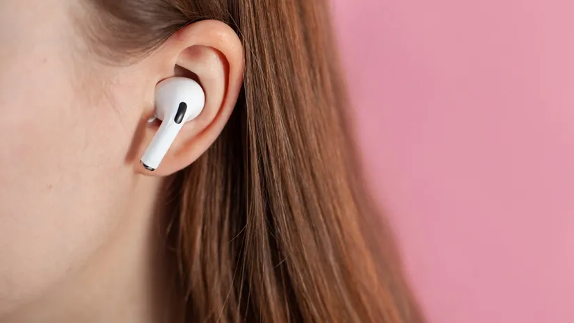
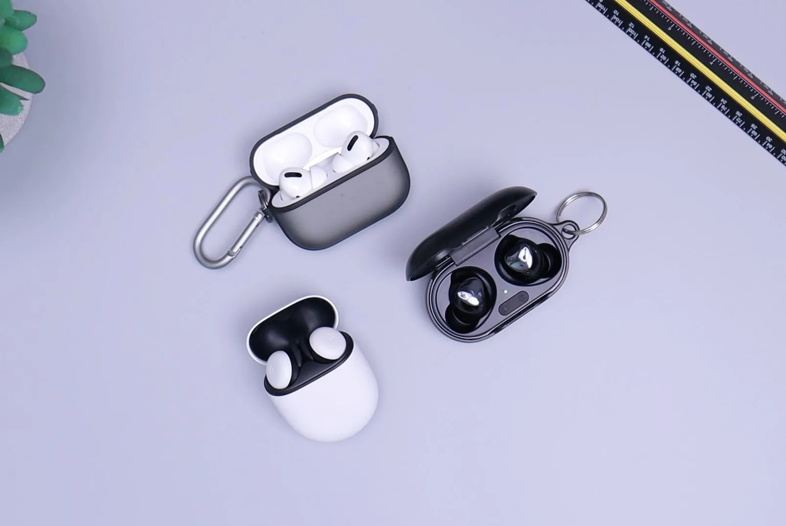

Your Earbuds are Gross. Here’s How to Clean Them

1.Disconnect and power down
If your earbuds are wired, disconnect them from your Android or iPhone. If they’re wireless earbuds, turn them off.
This usually involves holding down one of the buttons for several seconds. Double-check the manual to be sure;
just because they’re disconnected from your phone doesn’t mean they’re powered off.
2. Remove and clean the tips
Carefully remove the silicone or foam ear tips. These should slide off fairly easily. You can use a dry cotton swab,
aka a Q-tip, to remove any earwax buildup. A dilute mixture of dish soap and water can help if you haven’t cleaned
your buds in a while.
It’s important to clean the ear tips separately from the earbuds, so none of what you’re cleaning off gets jammed into
the earbud’s holes. Once cleaned, let the ear tips dry completely before you put them back on the earbuds.
3.Clean the earbuds
Even if your earbuds are water resistant, treat them like they aren’t when you’re cleaning. For example, don’t use high
pressure water, even from the tap. It could force its way into places it shouldn’t, ruining your earbuds in
the process. Also, don’t let them soak for the same reason.
One of the main areas you’ll need to clean is the mesh screen that covers the earbud’s sound-producing drivers. Any gunk
or grime buildup here can diminish the sound quality. You can use a clean, soft toothbrush to gently remove
any visible earwax or dirt.
A cotton swab dampened with isopropyl alcohol, aka rubbing alcohol, will work, too, but don’t use too much. We say damp,
not wet, as you don’t want the alcohol to get inside the earbuds. Don’t use anything stronger, like bleach or
other household cleaning agents, since these could damage the earbuds, too.
Whatever method you chose, clean with the speaker mesh facing down, so anything you remove falls out, not further in. Also
double-check that any charging ports are closed any time the earbuds are near liquid.

4. Clean the charging case
If your earbuds come with a charging case, you should always use it. However, that means it can get dirty too.
For wired headphones, cleaning the case can be as easy as wiping it out with a microfiber cloth. For wireless headphones,
it’s important to find the delicate charging pin connectors. If you’re not careful to keep these clean, your headphones
may not charge properly or at all. You don’t want to get them wet, though.
Your headphones may be waterproof, but the charging case may not be.
Using a similar method as for the earbuds themselves, lightly dampen a cotton swab with rubbing alcohol to clean the charging
pins. Make sure the charging case is completely dry before you put the earbuds back in.
How to keep your earbuds clean
The easiest way to keep your Airpods or other earbuds clean is to wipe them down after every use and store them in their case.
This is especially true for earbuds used at the gym, while exercising, or during any other sweaty activities.
For non-workout earbuds, you can probably get away with wiping them down every
few days, or maybe just once a week. Use microfiber, or another lint-free and dry cloth.
Don’t put your earbuds back in their case if they’re damp. If you regularly toss them into a gym bag with your other workout
clothes, consider using a desiccant silica gel. The gel will absorb the moisture in the bag. You could place the
silica gel and your earbuds together in a ziplock bag.
As with anything, it’s also worth checking any instructions included with your headphones, or on the manufacturer’s website,
for specific cleaning instructions for your headphone model.